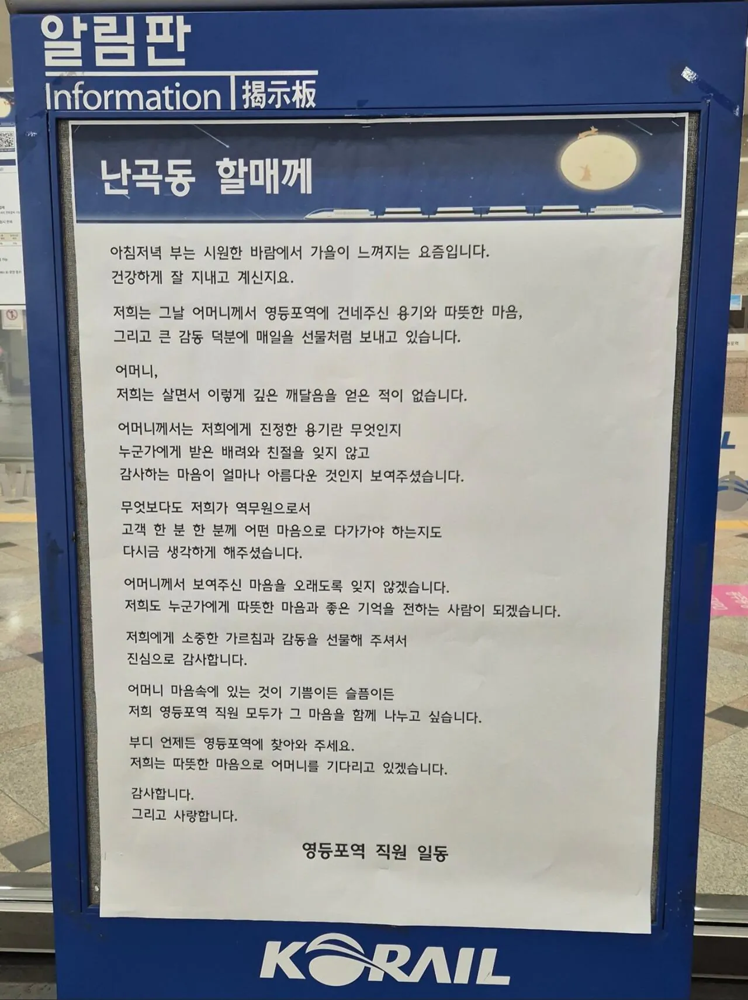
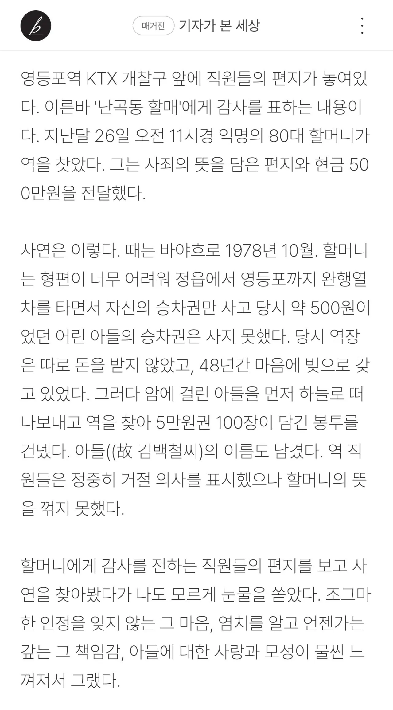
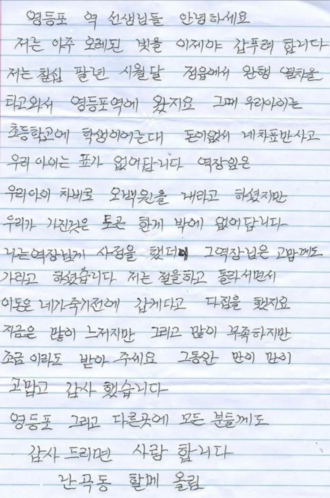

평소라면 일반적인 공지가 붙을 영등포역 알림판에
'난곡동 할매께' 라는 편지가 큼지막하게 붙여져 있음
사연을 알아보니 아래와 같았음


1978년 10월, 정읍에서 영등포까지 어린 아들과 함께 기차를 타려고 했으나 돈이 부족해 어린 아들의 승차권은 사지 못했음
그때 역장은 아들 승차권 금액을 받지 않았음
48년이 지난 지금, 마음의 빚을 갚고자 영등포역에 직접 현금 500만 원을 전달함
역 직원들은 정중히 거절했으나 할머니의 뜻을 꺾지 못함
그래서 알림판에 영등포역 직원들의 편지가 붙은 것.
ㅠㅠ